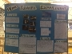

Class: Physics
Teacher: Mr. Pohlman
Project Name: Science Fair
Course Description: Physics is an advanced level science class that satisfies
the high school graduation requirement of a physical science class. Students should have
successfully completed or currently enrolled in Accelerated Math III. The physics curriculum
includes interactions of matter and energy, velocity, accelerations, force, energy, momentum
and charge. Students will be challenged to apply their knowledge of the laws of physics to solve
physics related critical thinking problems. Students will complete a long term science project that
will count as multiple test and projects grades for each nine week grading period. Students are also
required to read an outside novel as part of the Common Core Reading standards for science.
The following picture was the science fair for this year.
